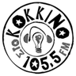
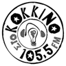

Why unweb.me rocks!
Unweb.me is a small but dedicated team of engineers that love to create genuine information systems. We have a strong preference to Free/Open Source Software and prefer to follow agile development practices. We also take information systems security seriously, and will deliver highly secure information systems.
Plumi!
Plumi is a Free Software video sharing Content Management System that enables the creation of Youtube-like systems. With Plumi you will have your own sophisticated video sharing site easily, with a wide array of functionality to facilitate video distribution and community creation. It includes a sophisticated workflow, site-wide, vodcasting, server-side flash/ogg transcoding and embedding, large file uploading via FTP and a range of other useful features.
Unweb.me is leading the development of Plumi since version 3.0 and is maintaining several Plumi portals, e.g. www.engagemedia.org of Australian based environmental NGO Engage Media.
- I'd be delighted, thank you.
- Chicken in a basket! It's been all ruddy go today!
- Brilliant!
News
- I'd be delighted, thank you.
- Chicken in a basket! It's been all ruddy go today!
- Brilliant!
 
